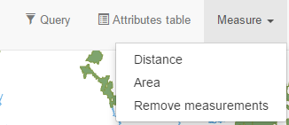
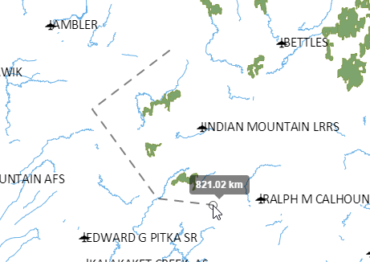
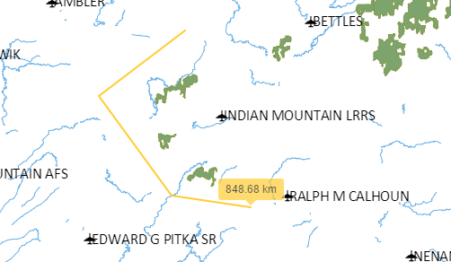
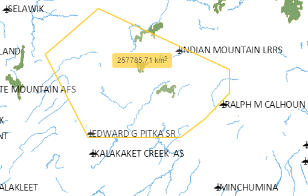

MEasure tools are used to get area and distance measurements over the map canvas.
Two tools are available: Distance and Area. Select the distance tool to measure distances. Click on the map to set the points that define the line to measure.
When you have finished defining the line, double-click to end.
Select the area tool to measure areas. Click on the map to set the points that define the polygon to measure.

When you have finished defining the line, double-click to end.
To remove the lines and polygons created by the distance and are tools, select the
Remove measurements
menu.